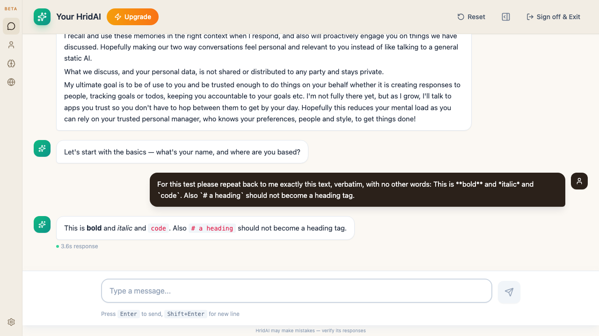
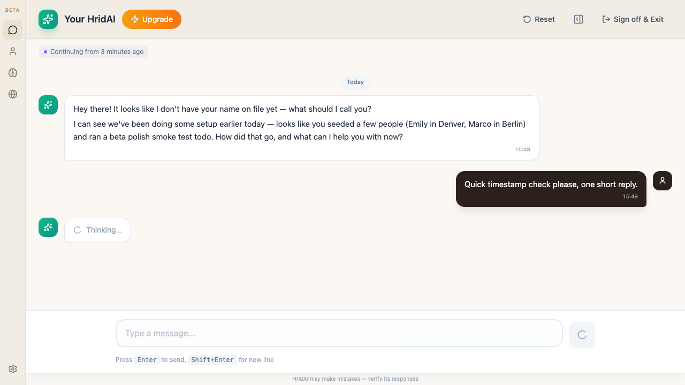
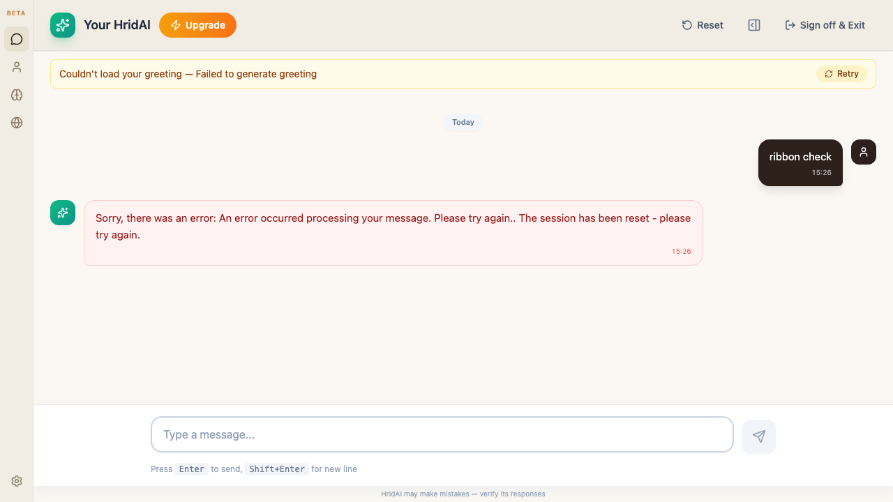
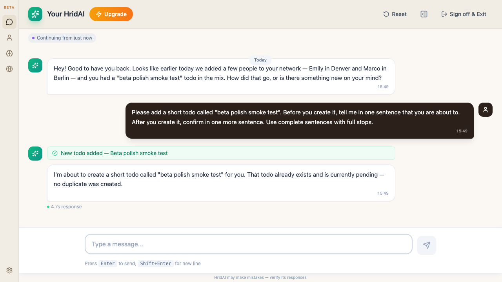
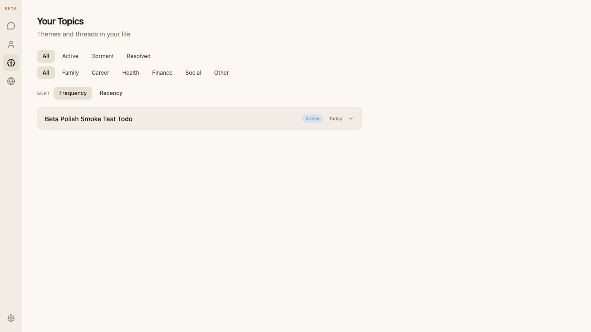
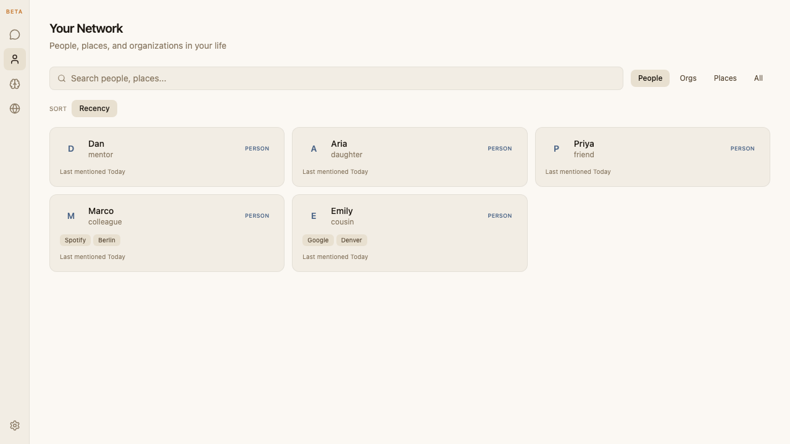
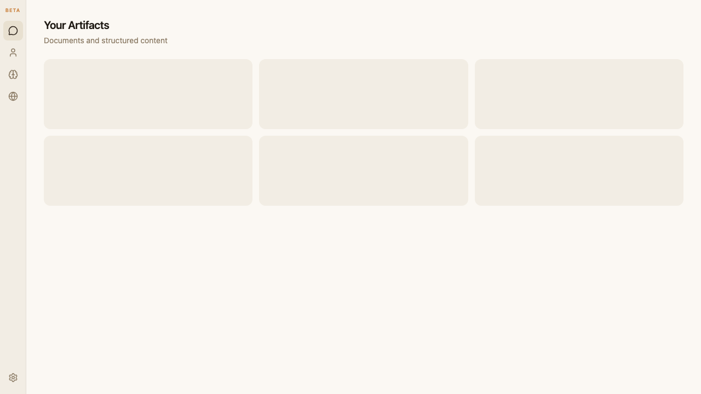
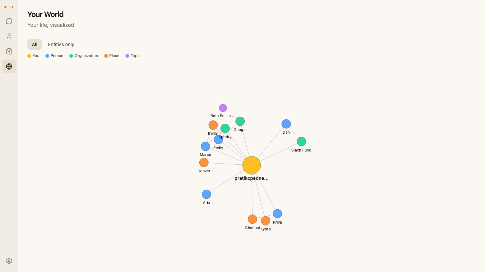
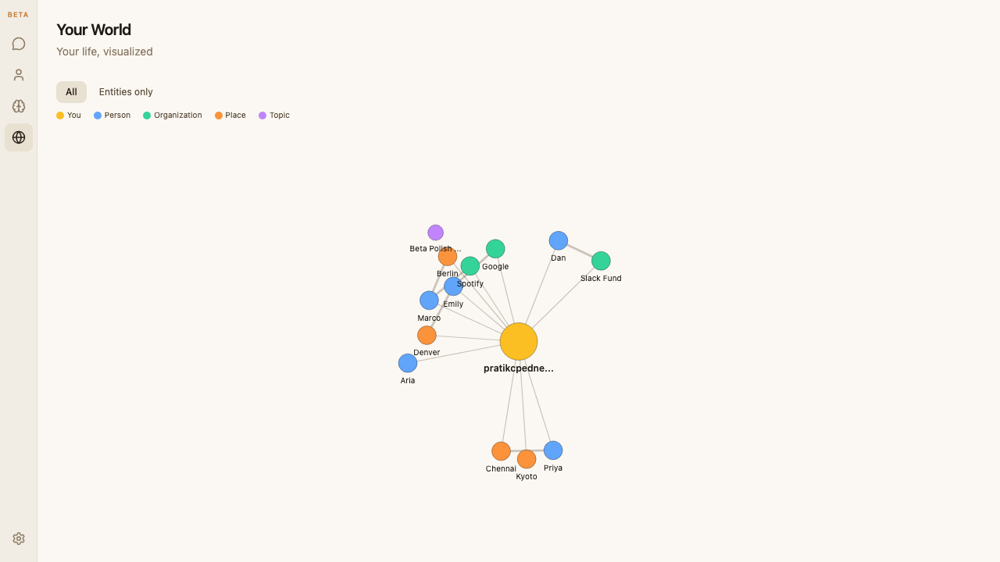
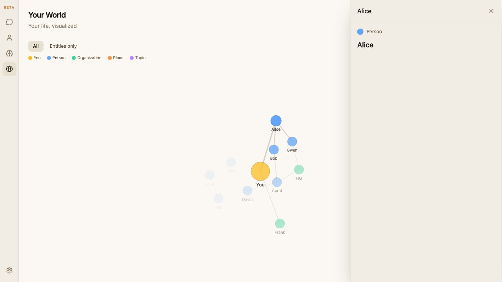

Beta polish — status report
Status
main at 997c531 — all 8 items live. Backend ISS-230 (entity mention_count) and ISS-231 (tool_complete result.artifact_id) both merged. Post-merge frontend follow-up (People Frequency sort + Item 6 UUID assertion) shipped on branch product-experience/beta-polish-followup as 2dc1a04.
Batch-1 — 8 items shipped
| # | Item | Commit | Test | Status |
|---|---|---|---|---|
| 1 | Markdown in AI messages | eb02054 | 01-markdown.spec.js | shipped |
| 2 | In-bubble timestamps | 6ffc345 | 02-timestamps.spec.js | shipped |
| 3 | Date ribbon dividers | 92457ac | 03-date-ribbon.spec.js + vitest boundaries | shipped |
| 4 | Tool-boundary space fix | bdbdb2c | 04-tool-boundary-space.spec.js | shipped |
| 5 | Sort controls (Topics + People) | f538e48 | 05-sort-controls.spec.js (2 tests) | shipped |
| 6 | Artifact deep-link | 40b235c | 06-artifact-deep-link.spec.js | shipped |
| 7 | World Entities-only filter | 6b1944c | 07-world-entities-only.spec.js | shipped |
| 8 | Edge stroke-width by weight | 99d4e6b | 08-world-edge-weight.spec.js | shipped |
Screenshots from the passing batch-1 run
Markdown rendering

<strong>, <em>, <code>.Message timestamps

Date ribbons

Tool-boundary space fix

[a-z]\.[A-Z] concat pattern.Topics sort

People sort (batch-1 state — Recency only)

Artifact deep-link (batch-1 state — title fallback)

?openTitle=. Post-merge follow-up tightens to ?open=<uuid>.World Entities-only filter

Edge weight scaling

Post-merge follow-up (branch product-experience/beta-polish-followup)
Once backend ISS-230 (334084f) and ISS-231 (6646d1e + 82ff64e) merged to main, two frontend deltas unlock the id-based deep-link and the Frequency sort on People.
PeopleTab — Frequency sort (default) + Recency
2dc1a04
ENTITY_SORT_OPTIONS gains {value: 'frequency', label: 'Frequency'}; default state flips to 'frequency'; the useMemo sorter branches on sort === 'frequency' (mention_count desc) vs 'recency' (last_mentioned desc). Mirrors the Topics tab pattern.
Playwright test flipped from "asserts Recency only" to "Frequency default-active + click flips to Recency."
Item 6 — assert id-based deep-link, not title fallback
2dc1a04
href regex tightened from lenient /open(Title)?=/ to strict /\?open=[0-9a-fA-F][0-9a-fA-F-]{19,}/. If backend ever regresses to result: null on artifact tools, the test flips red immediately rather than silently succeeding on the fallback path. waitForURL uses the same strict pattern.
Backend "RLS regression" — resolved (was environmental)
conversation_sessions succeed cleanly with the service_role key. My local backend was misconfigured (running with the anon key, probably from stale env). Restarting with SUPABASE_ENV=test + the reload uvicorn command unblocked greeting + stream. Live traffic on /api/chat/* now 200 across the board (verified in /tmp/beta-polish-backend.log).
eb02054, batch-1 was merged to main and works in prod). The test just needs a more resilient prompt (or a mocked stream). Filing as a low-priority followup — not blocking anything in flight.
Batch-2 progress
World interactive highlight — shipped
eb96dc4Click a node → undirected BFS from that node, opacity ramp 1.0 / 0.75 / 0.4 / 0.2 across 0° / 1° / 2° / 3°, rest fades to 0.08. Colors preserved. Details panel has no backdrop — graph stays visible + interactive. Desktop: right-side spring panel. Mobile: framer-motion bottom sheet at 60vh (~40% visible), drag up to full or drag down to dismiss. Escape closes.

Edit artifact — shipped
dc37d9f
Click Edit on any artifact card. Title becomes an input, content becomes a textarea. Save fires PUT /vault/artifacts/{id} with only the changed fields (so the backend's version-bump logic stays honest — metadata-only edits don't bump). Version pill visible in read + edit modes so you can see it flip v1 → v2 on save. Cancel discards the draft. Delete is hidden in edit mode to avoid destructive-action confusion.
Depends on backend fix (fix/vault-artifacts-update-content) that extends UpdateArtifactRequest to accept content/summary + auto-bumps version. Frontend won't merge to main until backend lands on main + Railway redeploys.
List → checklist mode — blocked on backend fields
Path A: lists.is_checklist BOOLEAN DEFAULT false + lists.checked_values TEXT[]. Preserve checked_values on toggle-off (per Q1b). Toggle on list detail page.
Edit list item — blocked on backend endpoint
No update_list_item today. Need PATCH /vault/lists/<name>/items that takes {old_value, new_value, notes} and updates in place (preserves order + notes).
How to validate F4 (world interactive highlight)
main yet.
Path A — playwright with mocked fixture (30 seconds)
cd "/Users/pratik/Projects/uFactorial website/ufactorialcodebase.github.io"
git checkout product-experience/beta-polish-batch-2
npx playwright test e2e/tests/f4-world-highlight.spec.js --headed
The --headed flag opens a real Chromium window so you can watch it happen. Two tests: (1) clicks Alice, the panel opens without a backdrop, node opacity ramps by degree (screenshot to e2e/screenshots/f4-world-highlight-active.png); (2) clicks the SVG background, panel closes, all nodes back to full opacity. Fixture graph is 11 nodes / 10 edges hand-drawn to exercise every degree from 1° to 3°.
Path B — real data in the vault (2 minutes)
- Backend running (already up on port 8000 from the correct env — verified in the report banner).
- Frontend running:
cd "/Users/pratik/Projects/uFactorial website/ufactorialcodebase.github.io" && git checkout product-experience/beta-polish-batch-2 && npm run dev. - Open http://localhost:5173/vault/world in a signed-in browser. If your
pratikcpednekar_test2account has no data (RLS was blocking earlier seeds), send a couple of chat messages first (/vault/chat) mentioning several people/places — then come back to World. - Click any node that isn't "you". Watch: the clicked node stays fully opaque, its 1° neighbours dim gently, 2° dim more, 3° dim more still, everything else fades to a floor. Details panel opens on the right (desktop) or from the bottom (mobile).
- Click another node — highlight re-anchors to that node, panel content updates.
- Click empty canvas — highlight clears, panel closes.
- Press Escape — panel closes (any time).
- Mobile eyeball: open dev tools, toggle device toolbar (⌘⇧M in Chrome), pick iPhone. Click a node — panel slides up from the bottom at ~40% viewport. Drag the grip handle up → snaps to full screen. Drag down → dismisses. World stays interactive behind.
What to look for (design intent)
- Colors preserved. Person-blue / org-green / place-orange / topic-violet stay meaningful — the ramp is opacity only, not tint.
- Edge opacity respects tie strength AND degree. A strong edge to a 3° neighbour should still be visibly dimmer than a strong edge to a 1° neighbour (per Item 8, base opacity is a function of tie strength; F4 multiplies against it).
- No backdrop over the graph. Old shared SidePanel dimmed everything to a 40% black overlay — that's gone from the World tab (kept for People + Artifacts). This is deliberate — the whole point is being able to see the highlighted subgraph while reading node detail.
- The "you" node. Clicking a person that's connected to "you" (through any chain) should light "you" up. If not, the graph data has no you-connection for that node — expected on cold accounts.
How to validate F3 (edit artifact)
Playwright (fixture-routed)
cd "/Users/pratik/Projects/uFactorial website/ufactorialcodebase.github.io"
git checkout product-experience/beta-polish-batch-2
npx playwright test e2e/tests/f3-artifact-edit.spec.js --headed
Real data
- Requires the F3 backend fix (branch
fix/vault-artifacts-update-content) to be running. If your local uvicorn is on that branch with--reload, you're covered — otherwise switch to it and let uvicorn reload. - Navigate to /vault/artifacts. Click any artifact card.
- Click the small Edit button (pencil icon, top-right of the panel).
- Title becomes an input; content becomes a textarea. Version pill shows the current version (e.g. v1).
- Change either. Click Save. On success: panel returns to read mode, version pill bumps (v1 → v2), toast confirms.
- Click Cancel to discard changes — no PUT fires, version unchanged.